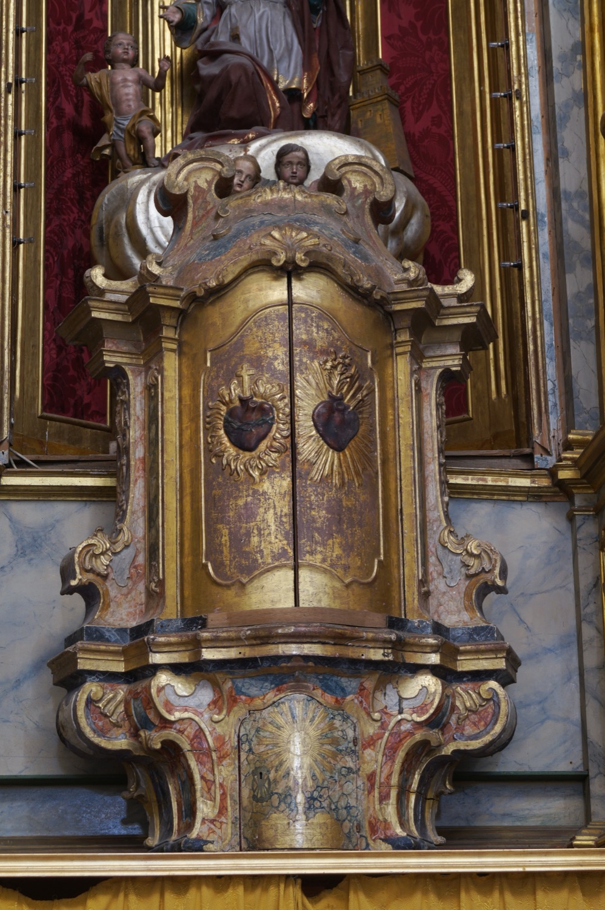

El sagrario monumental es obra de Mateu Colom, al igual que el resto del retablo mayor (s. XVIII). Está decorado con el Sagrado Corazón de Jesús (coronado por una cruz y rodeado de espinas) y el Inmaculado Corazón de María (coronado por un lirio y atravesado por una espada). El sagrario ordinario es la portezuela inferior, decorada con una custodia.